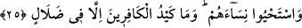

idi. Ancak sonra zenginlik yüzünden durumu değişti. Tıpkı Sâmirî gibi münâfıklaşıp
inkâr ve helâk hususunda onların kervanına katıldı.
Kendilerine gönderilen Mûsâ’nın ızhar ettiği mûcizeler hakkında, özellikle de asâ ile
ilgili olarak “Bu bir sihirbazdır.” O, bu hârikulâde şeyleri sihri bilmesi sâyesinde
gerçekleştiren bir büyücüdür “ve” Âlemlerin rabbı tarafından gönderilmiş olduğu
iddiâsıyla ilgili olarak da “yalancıdır” dediler. Onun, “Allah vardır ve ben onun
elçisiyim” diyerek yalan söylediğini ileri sürdüler.
“Kezzâb,” defalarca yalan söylemek suretiyle yalan söylemeyi âdet hâline getirmiş
kimsedir. Onlar Hz. Mûsâ’ya, mâhir sihirbaz anlamında “sehhâr” demiyorlardı. Çünkü
onun sadece bir büyücü olduğunu, kendi büyücülerinin ise ondan daha iyi birer büyücü
olduklarını iddiâ ediyorlardı. Nitekim, “(Ey Firavun! Şehirlere dellallar sal da)
bütün mâhir büyücüleri (sehhâr) sana getirsinler!” (eş-Şu’arâ 26/37) demişlerdi.
Bu ifâde ile Hz. Peygamber (s.a.) tesellî edilmekte ve Kureyş kâfirlerinden çok daha
güçlü ve zaman bakımından daha yakın olanların bile kötü sonları beyan edilmektedir.
et-Te’vîlâtü’n-Necmiyye’de der ki: “Andolsun biz Mûsâ’yı...” âyetiyle şuna işâret
edilmektedir: Cenab-ı Hak, kendi zamanında insanların en üstünü olan bir zâtı o lütufkâr
ihsânından dolayı en aşağılık yaratığının ayağına gönderiyor. İlâhî fazl u kerem
sâyesinde durumunu düzeltebilmesi için celâl huzûruna dâvet etmesi maksadıyla en
seçkin kulunu en âdi kulunun ayağına gönderiyor. O kul ise tabiatının âdîliğinden ve
aklının hafifliğinden onu yalanlıyor ve onu sihirbazlıkla suçluyor. Allah Teâlâ da hüküm
ve keremini göstererek onun cezasını hemen verivermiyor. Şakâvetinin iyice ortaya
çıkacağı âna kadar kendisine mühlet tanıyor. Sonunda onu kahır sıfatının, Mûsâ’yı da
eksiksiz saâdete ulaştırarak lutuf sıfatının mazharı kılıyor.
Bu bizlik, benlik, halkın merdivenidir;
Halk, nihâyet bu merdivenden düşer.
Serkeşlik eden kimse kahroldu,
Bundan arınan da muzaffer oldu.
25. İşte o (Mûsâ), tarafımızdan kendilerine hakkı getirince: Onunla beraber îman
edenlerin oğullarını öldürün, kadınlarını sağ bırakın! dediler. Ama kâfirlerin tuzağı
elbette boşa çıkar.
“Mûsâ tarafımızdan kendilerine hakkı” yâni kendi elinde ortaya çıkan mûcizeleri
“getirince,” şakavetlerini iyice tamamlamak istercesine: “Onunla beraber îman
edenlerin” yâni îmanda ona tâbi olmuş kimselerin “oğullarını öldürün, kadınlarını